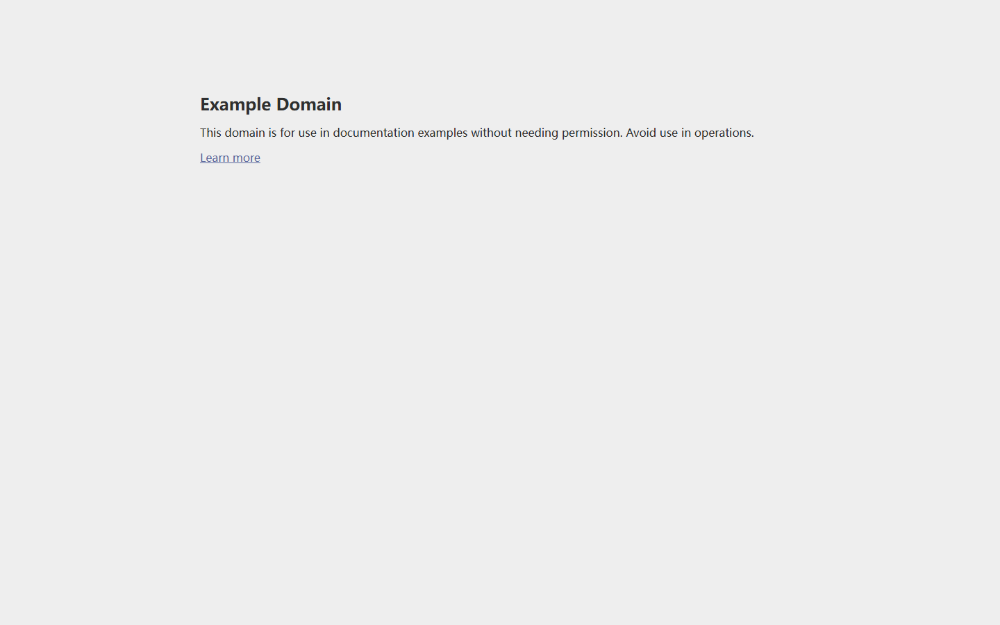

自动化测试报告
测试用例: 示例站点验证
执行ID: 1782362375_bc5ebdbf
开始: 2026-06-25 12:39:49 | 结束: 2026-06-25 12:39:56
通过
耗时: 6.89秒
通过率: 100.0%
5
总步骤数
5
成功
0
失败
0
阻塞
全程录屏
视频文件: ../video/page@d004da15929dffbb6bf95fd5df79b9c6.webm
执行步骤详情（共 5 步）
步骤 1: 导航到页面 [通过]
打开 example.com 首页
🌐 打开页面：导航到目标URL
📝 步骤说明：打开 example.com 首页
🔍 页面观察：当前URL `https://example.com/`。
✅ 执行结果：操作按预期完成，页面响应正常。
📷 执行后截图：已保存（`step_1_after_1782362391194.png`），展示操作后的页面变化
⏱️ 耗时：2.187秒
📷 执行后

步骤 2: 断言标题包含 [通过]
断言标题包含 Example


步骤 3: 等待元素 [通过]
等待 h1 标题出现


步骤 4: 断言文本包含 [通过]
断言 h1 文本


步骤 5: 固定等待 [通过]
停留 0.5 秒以便录屏
⏱️ 等待：暂停 0.79 秒
📝 步骤说明：停留 0.5 秒以便录屏
🔍 页面观察：页面标题为「Example Domain」，当前URL `https://example.com/`。
✅ 执行结果：操作按预期完成，页面响应正常。
📷 执行后截图：已保存（`step_5_after_1782362395617.png`），展示操作后的页面变化
⏱️ 耗时：0.788秒
📷 执行后

测试产物
产物目录: artifacts\run_1782362375_bc5ebdbf
- Trace 追踪文件:
../trace/trace_1782362375_bc5ebdbf.zip（可用playwright show-trace打开） - 网络 HAR: ../har/network_1782362375_bc5ebdbf.har
- screenshots/ - 每步截图
- video/ - 全程录屏
- dom/ - 页面DOM快照
- console/ - 控制台日志
- logs/ - 步骤结构化日志